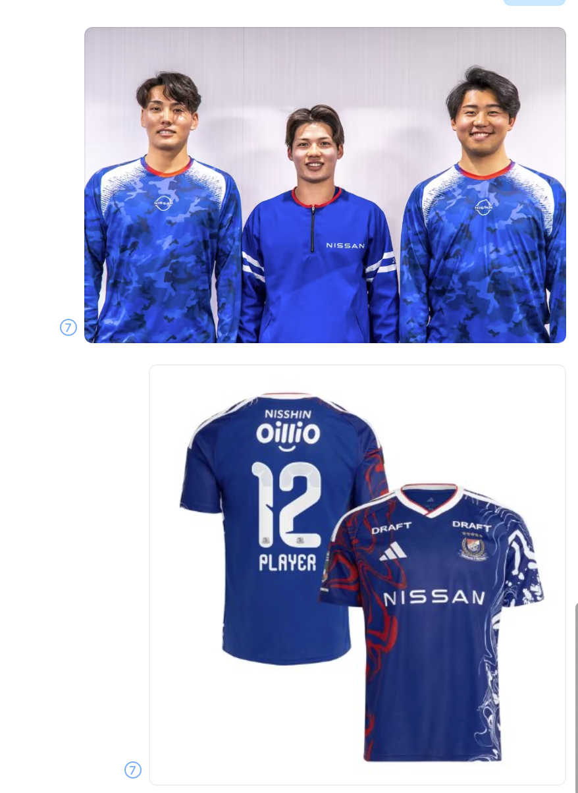

日产足球的黄金时期
1988/89 与 1989/90 连续两季包揽日本足球联赛、JSL 杯、天皇杯，成为企业队时代的代表性成就。[03]
从日产汽车足球部到横滨 F·水手，
从港口的蓝到球场的三色，
理解一件球衣背后的城市、品牌与共同记忆。

这段关系起于企业队，走向职业足球，也融入了横滨的城市身份。点击年份，查看关键转折。
历史与荣誉：俱乐部官方历史；股权节点见来源 05。
Marinos 在西班牙语中意为“水手”。官方将队名与横滨国际港口、驶向世界的形象连接在一起。以下为官方色彩释义，点击查看创意延展。
色彩定义及队名解释：俱乐部官方介绍。海鸥亦被用于吉祥物，连接海洋与航行的意象。
2026 年 7 月 5 日，俱乐部公布 2026/27 赛季球衣：以日本传统“墨流”技法为图案灵感，将水面纹样与港口城市的历史、共同的骄傲相连。[04]
1988/89 与 1989/90 连续两季包揽日本足球联赛、JSL 杯、天皇杯，成为企业队时代的代表性成就。[03]
俱乐部纪念史记录了他在这两个年份获 J 联赛 MVP。用具体荣誉呈现传奇，比笼统宣称“见证其全部生涯”更准确。[08]
横滨国际综合竞技场承办 2002 年世界杯决赛；2005 年 3 月才启用“日产体育场”冠名。两段历史需要分开叙述。[09]
在 2023/24 亚冠赛季进入决赛，最终获得亚军。可以表达球队突破，不将成绩归因为未经核实的日产预算或管理措施。[01]
蓝色承担主背景与城市感；白色用于文字、留白与秩序；红色落在关键节点和行动上。日产的简洁字标语言与水手的流动图案，可在同一版面中形成层次。
页面设计用色：#123EBC / #FFFFFF / #C91535 / #050B19。
为本次演示配色，不作为两品牌官方 VI 色值规范。
依据官方资料整理；创意诠释已单独标注。核对日期：2026 年 10 月 12 日。
白色改为官方的“专注与清白”，蓝色补入“冷静”，红色补入“爆发力”。“白浪与速度”“宿命感”等可作创意联想，不作为官方定义。
保留 2026-06-25 官方转让公告；不把转让公告写成完成交割或独资证明，也不推断“永久守护”“不可分割核心资产”。官方同时提及未来强化股东基础与财务可持续性。
2022 年以客场 3:1 战胜神户锁定 J1 冠军，不应写成在日产体育场捧杯。2002 年决赛时尚未冠名日产体育场。原文“波斯特科格鲁现热刺主帅”不作为本报告现职信息保留；未经来源支持的数据转型故事亦未采用。J 联赛夺冠报道 ↗
“2026/27 球衣墨流灵感”有官方支持；不将其自动等同于 2026 百年构想联赛球衣。截图不能确认“球员版”，也不证明上方人物服装与下方球衣属于同一系列。图像由用户提供，保留为研究参考。